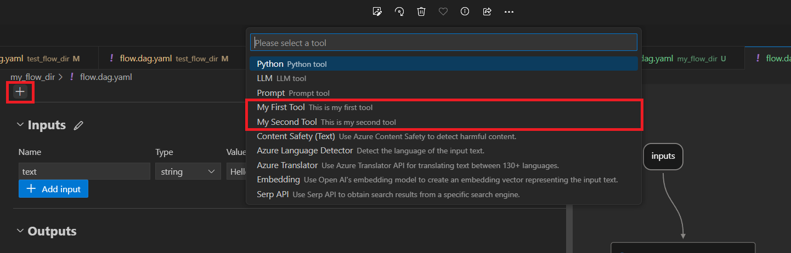
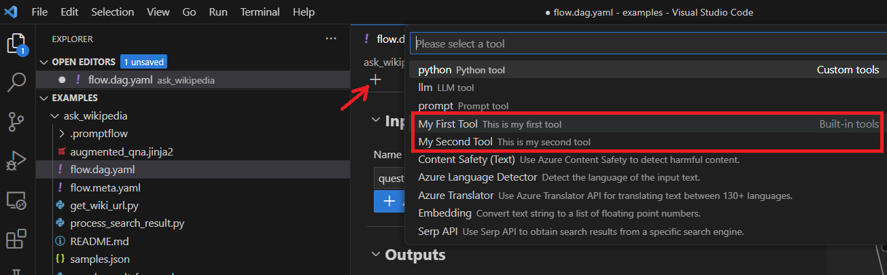

Create and Use Tool Package#
In this document, we will guide you through the process of developing your own tool package, offering detailed steps and advice on how to utilize your creation.
The custom tool is the prompt flow tool developed by yourself. If you find it useful, you can follow this guidance to make it a tool package. This will enable you to conveniently reuse it, share it with your team, or distribute it to anyone in the world.
After successful installation of the package, your custom “tool” will show up in VSCode extension as below: 
Create your own tool package#
Your tool package should be a python package. To try it quickly, just use my-tools-package 0.0.1 and skip this section.
Prerequisites#
Create a new conda environment using python 3.9 or 3.10. Run below command to install PromptFlow dependencies:
pip install promptflow
Install Pytest packages for running tests:
pip install pytest pytest-mock
Clone the PromptFlow repository from GitHub using the following command:
git clone https://github.com/microsoft/promptflow.git
Create custom tool package#
Run below command under the root folder to create your tool project quickly:
python <path-to-scripts>\tool\generate_tool_package_template.py --destination <your-tool-project> --package-name <your-package-name> --tool-name <your-tool-name> --function-name <your-tool-function-name>
For example:
python D:\proj\github\promptflow\scripts\tool\generate_tool_package_template.py --destination hello-world-proj --package-name hello-world --tool-name hello_world_tool --function-name get_greeting_message
This auto-generated script will create one tool for you. The parameters destination and package-name are mandatory. The parameters tool-name and function-name are optional. If left unfilled, the tool-name will default to hello_world_tool, and the function-name will default to tool-name.
The command will generate the tool project as follows with one tool hello_world_tool.py in it:
hello-world-proj/
│
├── hello_world/
│ ├── tools/
│ │ ├── __init__.py
│ │ ├── hello_world_tool.py
│ │ └── utils.py
│ ├── yamls/
│ │ └── hello_world_tool.yaml
│ └── __init__.py
│
├── tests/
│ ├── __init__.py
│ └── test_hello_world_tool.py
│
├── MANIFEST.in
│
└── setup.py
The points outlined below explain the purpose of each folder/file in the package. If your aim is to develop multiple tools within your package, please make sure to closely examine point 2 and 5.
hello-world-proj: This is the source directory. All of your project’s source code should be placed in this directory.
hello-world/tools: This directory contains the individual tools for your project. Your tool package can contain either one tool or many tools. When adding a new tool, you should create another *_tool.py under the
toolsfolder.hello-world/tools/hello_world_tool.py: Develop your tool within the def function. Use the
@tooldecorator to identify the function as a tool.[!Note] There are two ways to write a tool. The default and recommended way is the function implemented way. You can also use the class implementation way, referring to my_tool_2.py as an example.
hello-world/tools/utils.py: This file implements the tool list method, which collects all the tools defined. It is required to have this tool list method, as it allows the User Interface (UI) to retrieve your tools and display them within the UI.
[!Note] There’s no need to create your own list method if you maintain the existing folder structure. You can simply use the auto-generated list method provided in the
utils.pyfile.hello_world/yamls/hello_world_tool.yaml: Tool YAMLs defines the metadata of the tool. The tool list method, as outlined in the
utils.py, fetches these tool YAMLs.[!Note] If you create a new tool, don’t forget to also create the corresponding tool YAML. You can run below command under your tool project to auto generate your tool YAML. You may want to specify
-nfornameand-dfordescription, which would be displayed as the tool name and tooltip in prompt flow UI.python <path-to-scripts>\tool\generate_package_tool_meta.py -m <tool_module> -o <tool_yaml_path> -n <tool_name> -d <tool_description>
For example:
python D:\proj\github\promptflow\scripts\tool\generate_package_tool_meta.py -m hello_world.tools.hello_world_tool -o hello_world\yamls\hello_world_tool.yaml -n "Hello World Tool" -d "This is my hello world tool."
To populate your tool module, adhere to the pattern <package_name>.tools.<tool_name>, which represents the folder path to your tool within the package.
tests: This directory contains all your tests, though they are not required for creating your custom tool package. When adding a new tool, you can also create corresponding tests and place them in this directory. Run below command under your tool project:
pytest tests
MANIFEST.in: This file is used to determine which files to include in the distribution of the project. Tool YAML files should be included in MANIFEST.in so that your tool YAMLs would be packaged and your tools can show in the UI.
[!Note] There’s no need to update this file if you maintain the existing folder structure.
setup.py: This file contains metadata about your project like the name, version, author, and more. Additionally, the entry point is automatically configured for you in the
generate_tool_package_template.pyscript. In Python, configuring the entry point insetup.pyhelps establish the primary execution point for a package, streamlining its integration with other software.The
package_toolsentry point together with the tool list method are used to retrieve all the tools and display them in the UI.entry_points={ "package_tools": ["<your_tool_name> = <list_module>:<list_method>"], },
[!Note] There’s no need to update this file if you maintain the existing folder structure.
Use your tool from VSCode Extension#
Step1: Install Prompt flow for VS Code extension.
Step2: Go to terminal and install your tool package in conda environment of the extension. Assume your conda env name is
prompt-flow.(local_test) PS D:\projects\promptflow\tool-package-quickstart> conda activate prompt-flow (prompt-flow) PS D:\projects\promptflow\tool-package-quickstart> pip install .\dist\my_tools_package-0.0.1-py3-none-any.whl
Step3: Go to the extension and open one flow folder. Click ‘flow.dag.yaml’ and preview the flow. Next, click
+button and you will see your tools. You may need to reload the windows to clean previous cache if you don’t see your tool in the list. 
FAQs#
Why is my custom tool not showing up in the UI?#
Confirm that the tool YAML files are included in your custom tool package. You can add the YAML files to MANIFEST.in and include the package data in setup.py. Alternatively, you can test your tool package using the script below to ensure that you’ve packaged your tool YAML files and configured the package tool entry point correctly.
Make sure to install the tool package in your conda environment before executing this script.
Create a python file anywhere and copy the content below into it.
import pkg_resources import importlib def test(): """List all package tools information using the `package-tools` entry point. This function iterates through all entry points registered under the group "package_tools." For each tool, it imports the associated module to ensure its validity and then prints information about the tool. Note: - Make sure your package is correctly packed to appear in the list. - The module is imported to validate its presence and correctness. Example of tool information printed: ----identifier {'module': 'module_name', 'package': 'package_name', 'package_version': 'package_version', ...} """ for entry_point in pkg_resources.iter_entry_points(group="package_tools"): list_tool_func = entry_point.resolve() package_tools = list_tool_func() for identifier, tool in package_tools.items(): importlib.import_module(tool["module"]) # Import the module to ensure its validity print(f"----{identifier}\n{tool}") if __name__ == "__main__": test()
Run this script in your conda environment. This will return the metadata of all tools installed in your local environment, and you should verify that your tools are listed.
Why am I unable to upload package to PyPI?#
Make sure that the entered username and password of your PyPI account are accurate.
If you encounter a
403 Forbidden Error, it’s likely due to a naming conflict with an existing package. You will need to choose a different name. Package names must be unique on PyPI to avoid confusion and conflicts among users. Before creating a new package, it’s recommended to search PyPI (https://pypi.org/) to verify that your chosen name is not already taken. If the name you want is unavailable, consider selecting an alternative name or a variation that clearly differentiates your package from the existing one.